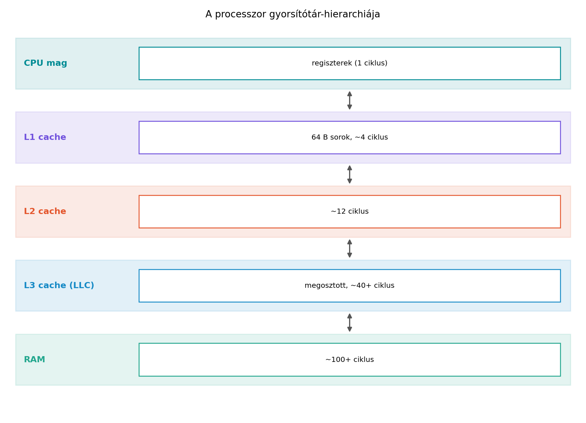
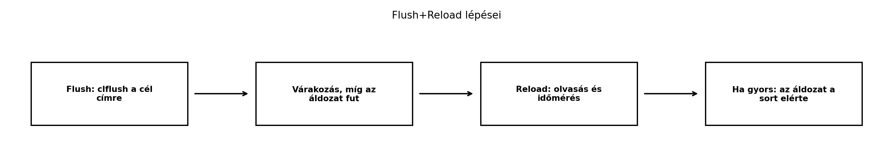

Az Az AES megvalósítása: T-táblák, AES-NI, bitslice és cache-időzítés alfejezetben láttuk, hogy a T-táblás AES a titkos kulcs és a bemenet XOR-jával indexeli a memóriát, ami időzítéses oldalcsatornát nyithat. Itt továbblépünk: a modern processzorok gyorsítótára (cache) nemcsak futásidőt szivárogtat, hanem azt is, hogy melyik memóriacímhez nyúlt az áldozat. Ez a megfigyelhetőség sokkal erősebb, mert a támadónak nem kell a teljes program futásidejét pontosan mérnie; elég a cache-sorok állapotát figyelnie. A támadás a felhőben különösen veszélyes, ahol különböző bérlők osztoznak ugyanazon a fizikai processzoron, de a böngészőben futó JavaScript is elérhet közös cache-t.
A leglátványosabb áttörést a Spectre és a Meltdown osztályba tartozó támadások hozták 2018-ban: megmutatták, hogy a processzor spekulatív végrehajtása még akkor is a cache-ben hagy titokfüggő nyomokat, ha a program forráskódja algoritmikusan konstans idejű. Ebben az alfejezetben a cache-oldalcsatornák működését, a T-táblás AES elleni támadást és a spekulatív végrehajtás elvét tanuljuk meg, a védekezési szemlélettel együtt.
A CPU a főmemória elérésének lassúsága miatt a gyakran használt memóriatartalmakat gyorsítótárban tárolja. A memóriából nem egyes bájtokat, hanem rögzített méretű blokkokat, úgynevezett cache-sorokat (cache line) tölt be; tipikus méretük 64 bájt. A cache szintekből áll:

A fenti ábra azt mutatja, hogy az L1 és L2 gyorsítótárak magonként különállók, míg az L3 (last-level cache, LLC) jellemzően a fizikai processzor összes magja között megosztott. Ezért két különböző processzormagon futó, egymástól egyébként elszigetelt folyamat vagy virtuális gép is ugyanazt az L3 cache-t látja. A cache-sorok állapota így közös csatorna: ha az egyik fél betölt egy címet, a másik fél mérheti, hogy az adott sor gyorsabban érhető el.
A támadó nem fér hozzá közvetlenül a cache-címkékhez, de az elérési időn keresztül következtethet rájuk. Ez a cache-oldalcsatorna alapelve: a memória-hozzáférés sebessége elárulja, hogy a kérdéses cache-sor a gyorsítótárban van-e, tehát hogy a másik folyamat nemrég hozzáfért-e.
Definíció. Cache-sor (cache line): a gyorsítótár és a főmemória közötti adatátvitel alapegysége, tipikusan 64 bájt. Egy memóriacím cache-beli helyét a cím bizonyos bitjei határozzák meg; a soron belüli eltolás nem látszik a cache-szintű hozzáférésben.
Definíció. Cache-oldalcsatorna: olyan információs csatorna, amelyben a támadó a cache-sorok állapotát (betöltött vagy kiürített) időméréssel figyeli, és ebből a megfigyelt folyamat memória-hozzáférési mintájára következtet. A szivárgás oka, hogy a memóriaelérési idő a cache találat vagy tévesztés függvényében különbözik.
Definíció. Prime+Probe: olyan cache-támadás, amelyben a támadó először a saját adataival feltölti a cache egy halmazát (Prime), majd hagyja az áldozatot futni, végül újra eléri a saját címeit és méri az időt (Probe). Ha az áldozat egy adott sort érintett, a támadó megfelelő sora kilökődik a cache-ből, ezért a támadó elérése lassabb lesz. Ehhez nem kell közös memória, csak közös cache.
Definíció. Flush+Reload: olyan
cache-támadás, amelyben a támadó egy megosztott memóriacímet (például
egy közös könyvtár függvényét vagy adatát) a cache-ből kiürít (Flush,
pl. clflush utasítással), majd vár, és újraolvassa a címet,
közben méri az időt (Reload). Ha az áldozat időközben hozzáfért a
címhez, a sor újra a cache-be kerül, így a Reload gyors lesz; ha nem, a
sor továbbra is a memóriából töltődik, ami lassú. A Flush+Reload tehát
közös memóriát igényel, de nagy pontossággal jelez egy adott cím
elérését.
Definíció. Spekulatív végrehajtás: a modern processzorok teljesítményoptimalizálása, amelyben a CPU az elágazások kimenetelét megjósolja, és a jóslat mentén előre végrehajt utasításokat, még mielőtt a feltétel kiértékelése lezárulna. Ha a jóslat téves, az architekturális állapotot visszagörgetik, de a spekulatívan végrehajtott memóriaelérések mellékhatása a cache állapotában megmaradhat.
Az Az AES megvalósítása: T-táblák, AES-NI, bitslice és cache-időzítés alfejezet összefoglalója szerint a T-táblás AES a körfüggvényt négy, egyenként 256 bejegyzéses táblába vonja össze, és minden oszlopban négy táblaérték XOR-ját számolja. Tekintsünk egyetlen tábla-hozzáférést. Az index mindig
ahol a megfigyelhető vagy ismert bemeneti bájt (pl. az első körben a nyílt szöveg bájtja, későbbi körökben az állapot egy bájtja), pedig a titkos körkulcs egy bájtja. A T-tábla bejegyzései 4 bájtosak, ezért a tábla mérete bájt. Ha a cache-sor mérete 64 bájt, akkor egy tábla 16 cache-sort foglal el, és minden cache-sor bejegyzést tartalmaz. A cache-sor indexét az
kifejezés adja meg, tehát az index felső 4 bitje.
A támadó, aki figyeli, hogy az áldozat a T-tábla melyik cache-sorát éri el, így felső 4 bitjét tudja meg. Mivel -t ismeri vagy tudja számolni, ebből felső 4 bitje meghatározható:
Az alsó 4 bit nem látszik ebből az egyetlen hozzáférésből, mert a cache-sor betöltésekor a soron belüli eltolás nem befolyásolja a találati időt. Az első kör hozzáféréseiből – bármennyi különböző nyílt szöveggel – csak a kulcsbájt felső 4 bitje nyerhető ki, mert minden megfigyelés ugyanazt a 16 elemű jelölthalmazt adja. Az alsó 4 bithez a második kör hozzáféréseit kell elemezni: ott az index az S-dobozon keresztül több kulcsbájt teljes értékétől függ, így a felső bitek ismeretében a maradék jelöltek ellenőrizhetők.
Legyen a titkos körkulcs bájtja , a támadó által ismert bemeneti bájt pedig . A tényleges tábla index
A cache-sor indexe, mivel 16 bejegyzés fér egy sorba:
A támadó tehát azt figyeli meg, hogy a hozzáférés a T-tábla 6. cache-sorába esett. Ebből és alapján a kulcsbájt felső 4 bitje
Így a támadó megtudja, hogy , azaz 16 lehetőség marad: . A tényleges kulcsbájt ezek közé esik. Más első körös bemeneti bájtokkal ugyanezt a 16 elemű halmazt kapjuk, az alsó 4 bit leszűkítéséhez a második kör hozzáférései kellenek (Osvik–Shamir–Tromer-féle második körös támadás).
Az alábbi ábra a példa két oldalát egymás mellett mutatja: a T-tábla megfigyelt cache-sorát és azt, hogy ebből a 256 kulcsjelöltből melyek maradnak meg.
A Flush+Reload a legnépszerűbb cache-oldalcsatornás mérési technika, mert pontos cím szerinti hozzáférést jelez. A lépéseket az alábbi ábra foglalja össze:

clflush utasítással.A T-táblás AES támadásakor a támadó mind a 16 T-tábla cache-sort figyelheti, és a gyors Reload-okból azonosítja a tényleges hozzáféréseket. A zaj csökkentésére sok mérést átlagol, és hipotézisvizsgálattal választja ki a legvalószínűbb kulcsbájtokat.
A hagyományos cache-támadások azt feltételezik, hogy az áldozati program ténylegesen végrehajtja a titokfüggő memóriaelérést. A Spectre támadáscsalád megmutatta, hogy a spekulatív végrehajtás miatt ez nem szükséges.
Tekintsük a következő, szándékosan egyszerűsített pszeudokódot:
if (x < array1_size) {
y = array2[array1[x] * 4096];
}A programozó szándéka szerint, ha x nagyobb vagy
egyenlő, mint az array1 mérete, akkor a tömbhöz nem
nyúlunk. A processzor azonban az elágazást megjósolhatja úgy, hogy a
feltétel igaz, és spekulatívan végrehajtja a
tömbhozzáférést, mielőtt a határellenőrzés befejeződne. Ha később
kiderül, hogy a jóslat téves, az architekturális állapotot
visszagörgetik, de a spekulatívan elért array2 cache-sora a
gyorsítótárban marad. A támadó ezután Flush+Reload vagy Prime+Probe
technikával megméri, melyik array2 sor került a cache-be,
és ebből következtet array1[x] értékére, ami titkos adat is
lehet.
A Meltdown támadás hasonló elvet használ, de a processzor a jogosultságellenőrzést kerüli meg spekulatívan. A támadó megpróbál olvasni egy tiltott kernelmemória-címről; a processzor a jogosultsági hiba előtt spekulatívan betöltheti a tiltott adatot a cache-be, majd a támadó oldalcsatornán kiolvassa. A Meltdown elsősorban az Intel processzorokat érintette, és a kernelmemória teljes kiolvasását tette lehetővé.
Mindkét támadásban a szivárgási csatorna ugyanaz: a cache állapota. A különbség az, hogy nem a program tényleges memóriaelérése, hanem a processzor spekulatív, később visszavont végrehajtása hagyja a nyomot.
Az Időzítéses támadások és konstans idejű programozás alfejezetben bemutatott konstans idejű kód azt jelenti, hogy a forráskód szintjén nincs titokfüggő elágazás, és a memóriaelérések címei sem függenek a titoktól. Ez a cache-oldalcsatornás szivárgást is megszünteti, ha a processzor sorrendben, spekuláció nélkül hajtja végre az utasításokat.
A valóságban a modern CPU-k a program utasításait átcsoportosítják, elágazásokat jósolnak, és spekulatívan hajtanak végre. A konstans idejű kód tehát a forráskód szintjén véd, de a hardver a kiadott utasítások egy részét akkor is végrehajthatja, ha a feltétel nem teljesül, és ez a spekulatív végrehajtás titokfüggő memóriaeléréseket okozhat. Az algoritmikus konstans idő tehát nem jelent védelmet a Spectre típusú támadások ellen.
A védekezéshez hardveres és szoftveres sorompók
(barrierek) kellenek, mint az lfence, csdb
vagy a retpoline technika, amelyek megakadályozzák, hogy a processzor
egy bizonyos ponton túl spekuláljon. Emellett operációs rendszer szintű
izoláció (pl. kernel page table isolation, KPTI) csökkenti a Meltdown
hatását.
Az első gyakorlati cache-időzítéses támadásokat a T-táblás AES ellen 2005 körül publikálták (Bernstein; Osvik–Shamir–Tromer), azonos gépen futó folyamatok között. Később kiderült, hogy a felhőben egy bérelt virtuális gép a közös L3 cache-en át (Prime+Probe) ugyanígy figyelheti a szomszédos bérlőt, és a T-táblás AES-t használó könyvtárak esetén titkos kulcsokat lehetett rekonstruálni. (Az évszámok ellenőrzendők.) A gyakorlati védekezés a hardveres AES-utasítások (AES-NI, ARMv8) vagy a bitslice megvalósítás lett, amelyek nem végeznek adatfüggő memóriaelérést.
A Spectre és Meltdown 2018. eleji nyilvánosságra kerülése alapvetően
megváltoztatta a böngészők biztonsági modelljét. A JavaScript
SharedArrayBuffer és a nagy pontosságú
performance.now() együtt lehetővé tették volna, hogy egy
weboldal a böngészőn belül cache-oldalcsatornát építsen, és más
weboldalak vagy akár a böngésző memóriájában lévő titkok nyomait
figyelje. A gyártók ezért csökkentették az időzítők
felbontását, alapértelmezetten letiltották a
SharedArrayBuffer-t, és bevezették a webhelyenkénti
folyamatelkülönítést (site isolation: minden webhely külön
operációsrendszer-folyamatban fut). A pontos verziókat és időpontokat
ellenőrizni kell, de 2018 folyamán a főbb böngészők egymás után adták ki
a Spectre elleni szoftveres védelmeket.
T-táblás AES használata éles rendszerben, amikor elérhető a hardveres AES. A T-táblás megvalósítás gyors lehet, de a cache-oldalcsatornás támadásoknak kitett. Modern rendszeren mindig az AES-NI vagy ARMv8 utasításokat, vagy ellenőrzött, konstans idejű/bitslice könyvtárat használjunk.
Azt hinni, hogy a konstans idejű kód a spekulatív végrehajtás ellen is véd. A forráskód szintű konstans idő szükséges, de nem elégséges. Hardveres sorompókat és az operációs rendszer Spectre elleni védelmét is be kell kapcsolni.
A Flush+Reload mérések zaját figyelmen kívül hagyó támadásértékelés. A védekezést tervező mérnök néha azt hiszi, egyetlen mérés nem elegendő, ezért a támadás nem praktikus. Valójában a támadó sok száz vagy ezer mérést átlagol, és statisztikailag megbízhatóan azonosítja a cache-sorokat. A védekezést nem a zaj szintjére, hanem a szivárgás teljes megszüntetésére kell alapozni.
Megosztott magokon futó érzékeny folyamatok cache-izoláció nélkül. A felhőben a bérlők közötti cache-partíció, az L3 cache-t szeparáló technológiák vagy a dedikált magok hiánya növeli a Prime+Probe kockázatát. A kulcsfontosságú titkokat kezelő szolgáltatásoknál mérlegelni kell a hardveres izolációt.
A böngészőben a nagy pontosságú időzítőre és közös
memóriára hagyatkozó kódok. A webes oldalakon a
SharedArrayBuffer és a nagy felbontású időmérők
újraengedélyezése bizonyos feltételek mellett lehetséges, de a
fejlesztőnek tudnia kell, hogy ezek együttesen cache-oldalcsatornát
nyithatnak, ezért a böngészők korlátozásait tiszteletben kell
tartani.
1. feladat (A). Definiáld a cache-sort és a Flush+Reload támadás lépéseit saját szavaiddal.
2. feladat (A). Egy T-tábla 256 darab 4 bájtos bejegyzést tartalmaz, a cache-sor mérete 64 bájt. Hány cache-sor fér el a táblában? Ha a támadó a 6. cache-sorhoz való hozzáférést figyeli meg, és a bemeneti bájt , mi a titkos kulcsbájt felső 4 bitje?
3. feladat (B). Magyarázd el, miért nem lehet egyetlen cache-sor megfigyeléséből a titkos kulcsbájt alsó 4 bitjét meghatározni a fenti T-táblás példában. Milyen további mérések segíthetnek?
4. feladat (B). Írd le a Spectre támadás pszeudokódját (határellenőrzés + spekulatív tömbhozzáférés + Flush+Reload), és azonosítsd, melyik lépés hagy cache-beli nyomot.
5. feladat (C). Informálisan érveld meg, hogy a Flush+Reload mérések elegendő ismétléssel megbízhatóan megkülönböztetik a hozzáférést a nem-hozzáféréstől, még zajos időmérő esetén is. Milyen valószínűségi érvelést használhatsz?
6. feladat (D). Tervezz ellenintézkedést egy webböngésző számára a Spectre típusú webes támadások ellen. Mely JavaScript API-kat korlátoznád, és milyen hiányosságai maradhatnak a védelemnek?
Önellenőrzés – válaszok
Igen. A Flush+Reload egy adott, támadó és áldozat által közösen elért memóriacímet ürít és tölt újra. A Prime+Probe ezzel szemben a támadó saját memóriáját használja, és csak közös cache-re van szükség.
A Prime+Probe a támadó saját, cache-t feltöltő adatait méri; a Flush+Reload a megosztott áldozati/bibliotékacím állapotát figyeli közvetlenül. A Flush+Reload pontosabb, de közös memóriát igényel.
A cache-sor betöltésekor a teljes 64 bájtos blokk a cache-be kerül, így a soron belüli eltolás nem befolyásolja a cache találati vagy tévesztési időt. A hozzáférhető bit a sor indexe, amely az index felső bitjeit tárja fel.
Mert a processzor az utasításokat spekulatívan is végrehajthatja, a tényleges architekturális folyamat visszagörgetése ellenére a spekulatív memóriaelérés cache-beli nyoma megmarad. A forráskód szintű konstans idő nem akadályozza meg a hardver spekulációját.
Sorompók (lfence, csdb), retpoline,
kernel page table isolation, mikrocode-frissítések, valamint az érzékeny
kódra a spekulatív ablakok minimálisra zárása.
A Spectre/Meltdown bejelentése után a böngészők csökkentették a
nagy felbontású időzítők pontosságát, letiltották vagy korlátozták a
SharedArrayBuffer-t, és webhelyenkénti folyamatelkülönítést
(site isolation) vezettek be, hogy egy weboldal ne férhessen közös
cache-időzítési csatornához.
1. feladat megoldása. A cache-sor a gyorsítótár és a
főmemória közötti csereegység, tipikusan 64 bájt. A Flush+Reload
lépései: (1) a cél cím kiürítése a cache-ből (clflush), (2)
várakozás az áldozat futására, (3) a cím újraolvasása időméréssel, (4)
ha az elérés gyors, az áldozat a sort használta.
2. feladat megoldása. A tábla mérete
bájt. A cache-sorok száma
.
A mért sor
,
a bemeneti bájt felső 4 bitje
.
Így
,
tehát a kulcsbájt felső 4 bitje 0010, azaz
.
3. feladat megoldása. A cache-sor indexe csak az index felső 4 bitjétől függ, mert egy sor 16 bejegyzést tartalmaz, és a soron belüli eltolás nem okoz időzítési különbséget. Más első körös bemeneti bájtokkal sem szűkül a halmaz 16 elem alá, mert minden megfigyelés ugyanazt a halmazt adja. Az alsó 4 bit meghatározásához a második kör hozzáférései kellenek, ahol az index az S-doboz nemlinearitásán át több kulcsbájt teljes értékétől függ.
4. feladat megoldása. Pszeudokód:
if (x < array1_size) y = array2[array1[x] * 4096]; A
processzor az elágazást igaznak jósolja, és spekulatívan végrehajtja a
tömbhozzáférést. Ez az array2 megfelelő sorát a cache-be
tölti. A visszagörgetés ezt a cache-beli nyomot nem törli. A támadó
ezután a Flush+Reload segítségével azonosítja, melyik
array2 sor került a cache-be, és ebből
array1[x] értékére következtet.
5. feladat megoldása. Minden mérésben a Reload idő két eloszlásból származik: gyors (cache találat) és lassú (cache tévesztés). A zaj (pl. ütemezés, más folyamatok) ellenére a két eloszlás szétválasztható, mert a gyors elérések jellemzően jóval kisebb ciklusszámúak. Sok független mérés átlagolásával a mintavételi zaj csökken, és a támadó nagy biztonsággal eldöntheti, hogy a megfigyelt cím a cache-ben volt-e. Ez a klasszikus statisztikai hipotézisvizsgálat: két eloszlás várható értékének különbsége a mérések számával egyre megbízhatóbban detektálható.
6. feladat megoldása. Lehetséges intézkedések: a
SharedArrayBuffer és a nagy pontosságú időzítők (pl.
performance.now()) korlátozása vagy engedélyhez kötése, a
webes tartalmak futtatása elkülönített operációsrendszer-folyamatokban
(site isolation), a böngészőben a spekulatív végrehajtás elleni
szoftveres védelmek (pl. retpoline). Hiányosság: a támadó más
oldalcsatornákat (pl. teljesítményelemzés) is használhat, és az
időzítő-korlátozás nem minden hardveren elegendő. A védelem réteges kell
legyen, és a gyártói frissítéseket követni kell.
A gyorsítótár (cache) közös erőforrás, amelynek soronkénti állapota
időméréssel megfigyelhető. A Prime+Probe a támadó saját adatait
használja, és csak közös cache-t igényel; a Flush+Reload egy megosztott
címet ürít, majd a Reload sebességéből következtet az áldozat
hozzáférésére. A T-táblás AES indexe
,
és a cache-sor indexe ezen érték felső 4 bitjét szivárogtatja; sok
mérésből a titkos kulcsbájtok rekonstruálhatók. A Spectre és Meltdown
megmutatta, hogy a spekulatív végrehajtás akkor is a cache-ben hagy
titokfüggő nyomot, ha a program forráskódja konstans idejű, ezért a
hardveres sorompók, a retpoline és az operációs rendszer izolációja is
szükséges. A böngészők 2018-ban csökkentették az időzítők pontosságát és
korlátozták a SharedArrayBuffer használatát. A
cache-oldalcsatornás szivárgás felismerése a Könyvtárválasztás, auditálás, tesztvektorok és
fuzzing alfejezetben az audit és a tesztelés során válik gyakorlati
szemponttá.
Ez az alfejezet a cache-időzítési támadások klasszikus
szakirodalmára, a Spectre és Meltdown nyilvános leírásaira, valamint a
BearSSL konstans idejű programozási útmutatójára és a Boneh–Shoup könyv
kapcsolódó fejezeteire támaszkodik. A konkrét cache-méretek,
ciklusszámok, a 2018-as böngésző-intézkedések pontos verziói és a
clflush viselkedése architektúrafüggő; ezeket a megfelelő
processzorgyártói dokumentációkban és a böngészőgyártók kiadási
jegyzeteiben ellenőrizni kell. A támadástechnikai részletek oktatási
célúak; ezeket csak saját, izolált játékkörnyezetben szabad
reprodukálni.